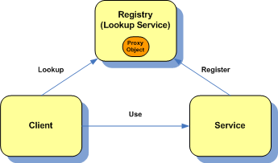
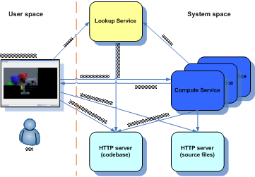
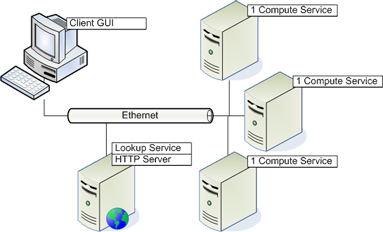

| Home |
| Documents |
|
- Introduction - Install & Run - User Manual |
| Download |
| Results |
| Although this distributed rendering software kit was bundled to make the installation and usage as easy as possible, I think, without at least a minimal understanding what happens behind the scenes one cannot leverage the full potential of the system. This page shortly introduces the Jini technology, then describes the architecture of the rendering environment and a typical rendering scenario, and finishes with some practical advices how to design and set up your own renderfarm. |
Jini |
Jini is distributed object technology developed by Sun Microsystems Inc. from 1999. Jini provides tools and mechanisms to build a robust and dynamic distributed system where every component is either a service or a consumer of a service (called client from now). Jini services are described with plain Java interfaces and all service operations can be accessed via those interfaces. Jini provides a Service Oriented Architecture (SOA) where the three main components are the Service, the Client and the Registry which is called Lookup Service in Jini terminology. The relationship of these entities is show in figure 1. When a Service starts up it registers its proxy object with the Lookup Service which is a plain Java object implementing the service interfaces and wraps a remote reference to the service backend. The proxy object hides all communication details to the service backed and makes Jini protocol independent, since any communication protocol can be implemented between the proxy and the service backend. After registering with the Lookup Services clients can lookup the suitable service based on the interface description. Moreover clients can subscribe for remote events that are triggered when the required service appears or disappears, so they can react quickly to any changes.  Of course Jini provides much more to build a robust distributed system, namely full security architecture, resource leasing, transactions and JavaSpaces that are all accessible via a mature and well designed API. Since Jini is used as the middleware in this distributed rendering software kit, the user will only perceive that after starting the client application the available services will be discovered automatically, and the addition and removal of computational services will be handled easily at runtime. |
| Architecture of the distributed rendering system |
From the user's perspective using this distributed rendering facility is very easy and straightforward provided there is an already set up renderfarm. Just start the client application, wait a little until the required number of services are automatically discovered and then simply load your scene file and press a button that immediately starts rendering using the remote services. If you have to set up your own renderfarm then you will have a bit more work, but If you understand what to start and where then setting up your rendering environment is relatively easy. This section introduces the main components of this distributed rendering environment and they relationships.  If you look at figure 2, you can recognize the three main components introduced in the previous section. The client in this case is the Distributed Rendering Client which has a GUI for easier use, the service is a special Jini service that is part of the JGrid infrastructure, called Compute Service, and finally the Lookup Service which is the registry so that the communicating parties could find each other. There are two more components in the figure, the two HTTP servers, one for the dynamic code download (required for RMI), and one for downloading scene and other necessary files by Compute Services for remote computation. The actual computations required for rendering a scene will be carried out by Compute Services. These are Java programs that exports out a JVM as a computational resource and behave as Jini services so that clients could dynamically discover them and communicate with them via the network. The Compute Service is a general purpose Java task execution service, and was designed to be a platform independent compute node in the JGrid service-oriented grid infrastructure. It can execute both sequential and parallel tasks both in synchronous and asynchronous mode, it can be remotely administered and monitored, supports secure execution and provides a high level API to program distributed applications building on it. For more details read the Compute Service Manual or the related research papers. |
| Typical rendering scenario |
After introducing the main components a typical rendering scenario looks as follows:
|
| Configurations |
When you would like to set up your distributed rendering environment first you have to design it depending on the resources that are on your disposal. Here design means to decide which component will run on which machine. A minimal configuration is shown in figure 3. Here the Lookup Service, the HTTP servers and the client GUI runs on the user's machine, while the computations are made by an other machine running one Compute Service. A real application of this configuration can be when the user wants to relieve his working machine meanwhile rendering a large scene, so that he could work uncluttered. Or, for example, if there is a powerful - possibly multiprocessor - machine available that the user has access to. The reason, why the Lookup Service and the HTTP server is not running on the remote machine, is that it will consume near 100% CPU time that could hamper the operation of the other services.
On the next figure (figure 4) a typical configuration is shown. This assumes that there are more computers available for rendering. In this configuration, the user machine runs only the client application because now the Lookup Service and the HTTP server (or servers) are migrated to a separate machine. This way the Lookup Service can keep running when the user machine is off that gives more stability to the system and lowers network traffic on the client side. The rest of the machines (that can be involved in the computations) each runs a Compute Service. Besides the user's and Lookup Service's machines any computer in the vicinity can be involved in the rendering. This can range from the workstations of the workmates that stay mostly idle in the network to the more powerful servers or mainframes. However, there is one more important thing to mention. Since the scene files (.sc files) and they related files can possible be several 100 megabytes large it is necessary to ensure that the HTTP server has enough bandwidth and also scalable enough to serve dozens of Compute Services. If you work with large files, it is also possible to use a single shared directory on some file server, and configure the Compute Services to use that directory as the temporary download directory, and then mark all files in the GUI (or at least the large ones) as cachable, so no download will be made. In this case the client should also use that shared directory to select files from.  After understanding and designing your system you can start installing the downloadable bundle to each computers. |
{kind=link}
{kind=link}
{kind=link}